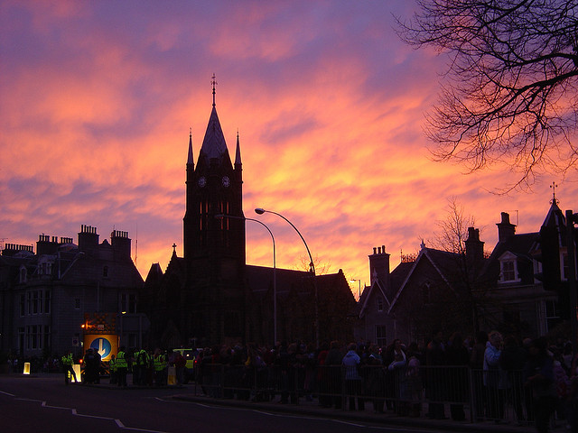
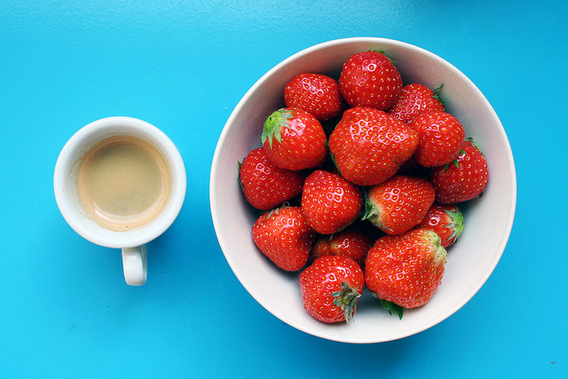

形状
我们把一条闭合的、形成物体轮廓的线条称为形状。形状的空间是二维的。它只能在纵横两个座标上显示，无法表现深度或体积。眼睛通过对形状的识别可以迅速地分辨许多物体。有时即使只给出猫、房子或人脸的一部分外形，你便能立即识别出这些不同的东西。而如果只显示这些东西的颜色，质感，或只给出几根线条，你将很难分辨出这些是什么东西。
对大多数物体来说，你心中只有一个或两个典型形状作为它们的代表。不过并不是所有的物体都能够抽象成一种形状的，从不同的角度所看到的物体形状往往不尽相同，有时给人以抽象神秘的感觉。
最单纯的形状是剪影。剪影剔除了所有有关的质感、结构和色彩的暗示，只剩下形状。这时的形状能激发人们对没有显示出来的东西的想象。在某种意义上，人们对剪影的理解是个性化的，因为观赏者在观赏时所填入的细节在很大程度上受他们的经验所制约。剪影就象广播剧，当你听到讥笑的声音和哀求的哭喊声时，在你的脑海里就会出现一个隐藏在你心里的形象：一个恶棍，长着鹰钩鼻子和粗浓的胡子，一对小眼睛闪着凶光。
当一个物体清晰地从背景中分离出来时，形状便占了主要地位，而这种分离既可由影调，亦可由强烈的色彩对比所致。当你正面观察物体时，往往有这种情况。色彩对比同样能将人们的注意力引到形状上去，因为此时物体的轮廓变得相当明显。就高光形状而言，唇膏的色彩效果，就是用色彩对比突出形状的一个典型事例。
结构
结构在三维空间中提示世界，它在形状的长和宽之外加上了深度和体积感。形状使我们能够识别嘴唇，而结构则可表现嘴唇的丰满程度。通过对一只梨、一张脸或任何其它物体的结构表现，你能够把它们描绘得极其逼真，以至使观赏者忍不住想伸手去拿梨子，还真想咬上一口。
不同的结构能激起人们不同的反应。一些常见的小物体的结构，诸如一块楔形的糕饼或一条块状的肥皂，能够激起比一些大物体（如只能看看的房子）更强烈的物感，人体富有魅力的柔和、曲线形的结构，常常能诱发人们的欢悦感，生硬、棱角分明的结构，诸如楼梯及自然界中不规则的东西，会激起人们分析的，甚至于挑战的感受。
在一张平铺的纸上表现出结构的体积感和深度似乎是不符合逻辑的，只有当你认识到人的视觉本身亦是在相对扁平的视网膜上感受到物体的体积和深度时，你才会改变种看法。照片是二维的，但眼睛却能立体地观察照片中的景物，并能看到其它信息，尽管这些信息并没有在照片上显示出来。而在摄影上表达结构的最重要的提示手段便是“蚀刻”。所谓“蚀刻”，即制造阴影。制造阴影的关键是照明。通过选择照明，你可以用高光和阴影清晰地表现一个物体的变化莫测的表面；由此你可得到经过精心描绘的结构----如，隆起的鼻孔，凹陷的眼窝，鼓起的二头肌等。
强弱程度变化不一的侧面光能最佳地表现结构，其强弱的最佳组合则取决于拍摄对象和你的拍摄意图。柔和的侧面光，例如人北窗射入的侧面光，具有较广的协调范围。从高光到浓重的阴影，渐变的光照层次能够表现精巧的结构，如腹部的条纹或手背上的肌理等。弥散光能较好地表现弯曲物体的结构，如梨、树枝等。强烈的侧面光，如电子闪光灯光或阳光，会使画面产生强烈的反差，即画面突然从高光转向阴影，它能将许多细小的特征隐入阴影之中。
图片

